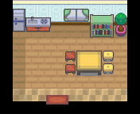

要进化的绿毛虫
一句话目标：帮吉野市的女孩收服一只绿毛虫，并把它让给女孩来培育进化。
接取地点
- 吉野市（地图 45:4）内，站在 (8,4) 的女孩。
准备条件
- 已加入游击士协会（剧情旗标 4246 成立）。
- 需要有办法捕捉绿毛虫；交付时必须从队伍中把绿毛虫交出去（会离队）。
操作步骤
- 在吉野市与女孩对话，她说明想亲手培育绿毛虫看它进化，询问能否把抓到的绿毛虫让给她。
- 选择答应，任务接取（接受任务:<要进化的绿毛虫>；接取旗标 5466）。
- 去野外捕捉一只绿毛虫带在队伍里。
- 回到女孩处对话，她问"你收服到绿毛虫了吗"，选择"是"，进入队伍选择界面。
- 从队伍里选中绿毛虫；系统会核对它是不是绿毛虫，并再确认一次"真的要让出这只宝可梦吗？"。
- 选择"是"后绿毛虫离队，播放进化与对话过场；随后女孩给出报酬，任务完成（完成旗标 5467）。
交付检查
- 队伍里必须有一只绿毛虫；若带来的是其他虫系/其他宝可梦，她会说"诶，绿毛虫应该不长这样吧？"并结束。
- 确认让出这一步选"否"会取消，可稍后再来。
奖励
- 经验糖果XS×2。
- 5000元。
- 3 BracerPoints。
容易卡住的位置
- 绿毛虫是从队伍中"交给"对方，不是普通的道具交付；交出后队伍里就没有它了。
- 必须在队伍中持有，放在盒子里不行。
- 交付前若接受界面选了取消，不会消耗绿毛虫。
来源与待补字段
地点地图
共享RGB底图；点击可缩放定位。数字对应本页相关地点，不代表地图上全部事件。
吉野市

1 要进化的绿毛虫（8,4）